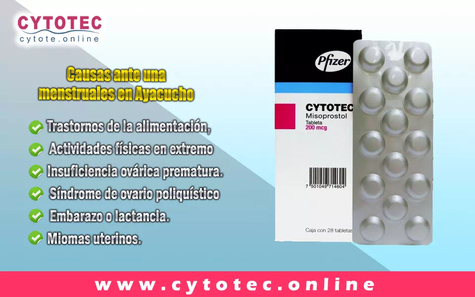
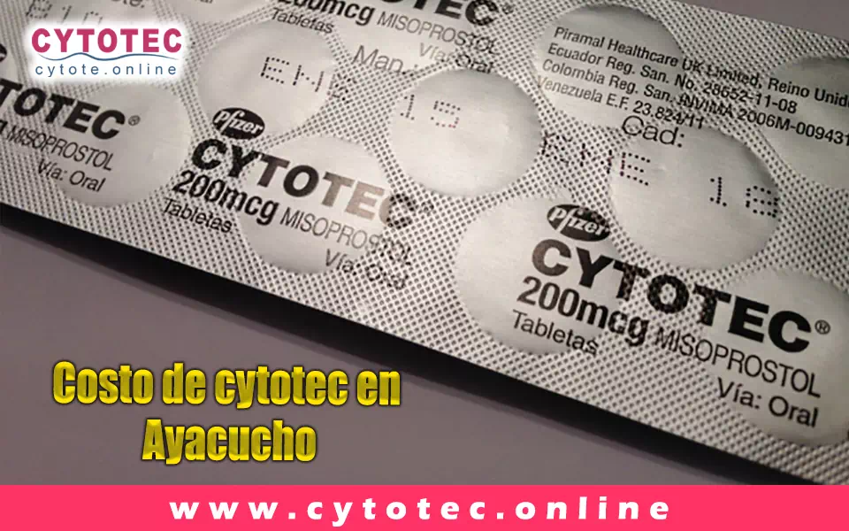

VENTA de
PASTILLAS ABORTIVAS
CYTOTEC en Ayacucho
Aquí
Venta de Cytotec en Ayacucho Atraso menstrual
El atraso menstrual en Ayacucho. es uno de los diagnósticos más tempranos de un embarazo no deseado. Un atraso menstrual puede deberse también a muchos factores de tipo hormonal, físico, hábitos alimenticios, cambio de estado de ánimo, temperamental o psicológico. Las causas que ocasionan el atraso menstrual son variadas no es considerado como una enfermedad sino como la consecuencia de ciertas patologías cuyas alteraciones ocurren en el cuerpo de la mujer y están vinculados a la menstruación. Los más frecuentes son el síndrome premenstrual (SPM) y el dolor que aparece durante la menstruación (dismenorrea) la irregularidad de los ciclos menstruales (menarquia y amenorrea).
son irregularidades del ciclo menstrual, que se manifiestan por el atraso temporal en la bajada del periodo (regla). En ciertos casos se considera normal un atraso menstrual de (3 a 10 días) partiendo de la fecha que le corresponde venir la regla. Si se excede por tiempo prolongado de manera irregular es evidente que algo está ocurriendo en tu cuerpo que afecta tu salud integral.
las causas que desencadenan los atrasos menstruales en Ayacucho se encuentran:
- Trastornos de la alimentación,
- Actividades físicas en extremo
- Insuficiencia ovárica prematura.
- Síndrome de ovario poliquístico
- Embarazo o lactancia.
- Miomas uterinos.
Atraso menstrual en Ayacucho solución
Si tienes un atraso menstrual, lo primero que debe realizar es un test de embarazo para descartar esa probabilidad. Si el atraso menstrual perdura por un determinado lapso de tiempo y no logra identificar la causa, lo más recomendable es acudir al ginecólogo para que pueda identificar cuál es el origen y tratar el problema, El médico podrá solicitar exámenes como la prueba de progesterona y de prolactina para intentar identificar el motivo de este retraso e indicar el tratamiento más adecuado.
atraso menstrual Ayacucho costo.
Los costos de estos tratamientos no son determinantes, por lo general los atrasos menstruales son consecuencias de otras enfermedades o trastorno por lo cual es fundamental que el médico especialista logre identificar las causas reales mediante los estudios medico necesario para así poder indicar el tratamiento correspondiente.
Cytotec WhatsApp.
Nuestra página web fue creada con la finalidad de informar correctamente sobre el uso de Cytotec para interrumpir un embarazo temprano. En éste website podrás encontrar toda la información que necesitas para aclarar tus dudas sobre cómo llevar a cabo el tratamiento de manera efectiva. tenemos a la disposición de nuestros distinguidos clientes, nuestro número telefónico con WhatsApp a través del cual. puedes envíanos tu caso y serás atendida de manera personalizada 24/7.
Pastillas Abortivas Nombres Y Precios.
Debido a la demanda de las pastillas abortivas a nivel mundial. muchos laboratorios patentaron medicamentos con el componente activo Misoprostol, el cual es el que ocasiona la interrupción del embarazo. por este motivo existen muchas marcas en el mercado, su costo es variante según el país donde se este y sus legislaciones, actualmente en Perú. se logra conseguir a la venta marcas como:
- Cytotec
- Arthrotec
- Oxaprost
- Misoprolen
- Cytofine
Pero la de mayor demanda y aceptación es el Cytotec, su costo vario según donde la adquieras. en farmacias es económico debido a los convenios con los laboratorios, en nuestra página web. puedes solicitarla en la comodidad de tu hogar, con asesoría paso a paso como realizar el procedimiento y de manera garantizada, la dosis se relaciona directamente con tu tiempo de embarazo.
- Tiempo de gestación de 8 semanas o menos. Tratamiento: 8 pastillas de Cytotec, 2 de mifepristona, antibióticos y antinflamatorios todo el tratamiento a un costo de 250 soles.
- Tiempo de gestación mayor de 8 semanas hasta 12 semanas. tratamiento: 12 pastillas de Cytotec, 4 de mifepristona, antibióticos y antinflamatorios todo el tratamiento a un costo de 300 soles.
Comprar pastillas Cytotec en Ayacucho
Comuniquese con nosotros al Aquí YA! para darle mayor informacion.
Venta de Pastillas Cytotec en Ayacucho

Cytotec - Misoprostol
Vendemos pastillas Cytotec originales del laboratorio Pfizer, pastilla tiene 200 mg y
viene sellado en su respectivo blister, presenta la fecha de fabricacion, fecha de
vencimiento, registro sanitario y las características por dentro. Las pastillas son
pequeñas de forma hexagonal marcada con su determinado código 1461 que la acredita con
la veracidad de las mismas.
Es necesario 2 dosis. Cada dosis constituye de 4 pastillas, en total serian 8 pastillas
(cada una, contiene 200 mg. de Misoprostol). Se les recomienda a los pacientes tener una
previa ecografía. No realizar dicho procedimiento si se tiene diabetes, hepatitis tipo
C. Dificultades para la coagulación de la sangre y que tampoco tengan ningún tipo de
puntos como cesáreas recientes en el área del abdomen
En Resumen:
- Tabletas: Cito protector y antisecretor para el tratamiento de la úlcera péptica
(Misoprostol)
- Forma Farmacéutica y Formulación
- Cada TABLETA contiene: Misoprostol 200 mcg. Excipiente, c.b.p. 1 tableta.
Tabletas con 200 mcg de misoprostol sin recubrimiento de color blanco y con forma
hexagonal; de un lado, llevan grabadas las leyendas “1461”.
Que hacer después de haber usado Cytotec
Se recomienda que después de haber realizado el aborto tomar un reposo aproximado de entre 1 a 2 días, estando en casa el reposo será totalmente normal, esto con la finalidad de cicatrizar rápidamente dentro del útero donde se produjo el desprendimiento.Pastillas Abortibas Cytotec Ancash
Pastillas Abortibas Cytotec Ancash
Que es una Pastillas abortivas o pastillas para abortar
La píldora abortiva, aborto inducido o aborto con medicamentos es un modo segura y eficientes de impedir un embarazo en su periodo inicial.
¿Cuándo puedo tomar la píldora abortiva?
Lo habitual, la pastilla abortiva se ingiere hasta 70 días (10 semanas) en tu último período menstrual luego del primer día. Si ya pasaron 71 días o más desde tu última menstruación, puedes obtener un aborto elaborado en un consultorio para interrumpir el embarazo.
¿Por qué eligen la píldora abortiva?
Cualquier otro tipo de aborto que elijas depende de las circunstancias y
particularidades personales. A diferentes personas tienen la idea de que en el
caso del
Tu doctora, enfermera o el personal del consultorio pueden auxiliar a decidir
cuál es el modo indicado para usted.
¿Cómo funciona la píldora abortiva?
Tenemos Una Unida Odstetricia referente en Ancash, Del Mismo Modo, Nuestro Servivios Es Lider En Ancash Capas De Darle El Mejor El Mejor Tratamiento Si Sufre De Un Atraso Menstrual.
Aborto espontáneo, ¿que es?
El vocabulario médico para esta forma de pérdida es “aborto espontáneo”.
El aborto espontáneo es cuando un feto muere antes de la semana veinte de que la
mujer alla quedado embarazada. El aborto espontáneo habitualmente ocurre
anticipado en un embarazo, entre ocho y diez abortos espontáneos acontecen
durante los primeros tres meses.
Muchas personas perciben este tipo de pérdida del embarazo. De hecho, entre el
10 y el 20% de los embarazos terminan en abortos espontáneos. De hecho es algo
común, el aborto espontáneo puede ser emocionalmente difícil de afrontar. Es
normal tener sentimientos de pérdida y duelo.
El aborto espontáneo y sus causas
Es difícil llegar a saber justamente por qué se causó un aborto espontáneo, pero
casi nunca es causado por algo realizado por la mujer embarazada. Las acciones
normales como hacer ejercicio, trabajar, tener sexo, y tomar la mayoría de los
fármacos NO inducen un aborto espontáneo. Las lesiones menores, como las caída,
habitualmente tampoco son la causa de un aborto espontáneo. Algunas cosas que se
sabe que producen un aborto espontáneo incluyen las siguientes:
• Que el óvulo fecundado posea un número disparejo de cromosomas (genes). Esto
se produce al azar, de manera que no lo puedes impedir ni estimular.
• Algunas enfermedades, como la diabetes grave, pueden desarrollar el riesgo de
padecer un aborto espontáneo.
• Cuando se produce una infección muy seria o una lesión mayor pueden originar
un aborto espontáneo.
• Los abortos espontáneos tardíos —después de los 3 meses— pueden suceder por
anomalías en el útero.
• Si ya se ha padecido de 2 abortos espontáneos continuos, es muy posible que
tengas otro.
tipos de aborto espontáneo
Existen diferentes tipos de aborto espontáneo:
• Amenaza de aborto espontáneo: posees sangrado vaginal, en algunos casos con
cólicos moderados, pero el cuello uterino permanece cerrado. La mitad de las
veces, el sangrado se contiene, y el embarazo se desarrolla normalmente. La otra
mitad de las amenazas terminan irremediablemente en abortos espontáneos y en la
pérdida del embarazo.
• Aborto espontáneo inevitable: la hemorragia aumenta, y tu cuello uterino se
abre. Si sucede esto, no hay probabilidades de que tu embarazo se extienda.
• Aborto espontáneo incompleto: parte del tejido del embarazo sale de tu útero,
y parte queda dentro. A veces, es necesario un tratamiento para quitar el tejido
restante.
• Aborto espontáneo completo: todo el tejido del embarazo sale del útero.
Generalmente no es necesario ningún tratamiento adicional.
• Aborto espontáneo retenido: no tienes cólicos o sangrado, pero el ultrasonido
indica un embrión sin latido cardíaco o un saco gestacional vacío, es decir, sin
el embrión. Generalmente el tejido sale del cuerpo solo, pero puedes necesitar
tratamiento.
Embarazo no deseado
Un embarazo no deseado es un suceso muy estresante para la mujer, ya que debe
afrontar una decisión muy significativa de manera emocional y física.
¿Qué es el embarazo no deseado?
El embarazo no deseado se provoca cuando la mujer queda embarazada sin quererlo
o sin una organización anticipada, otros casos podrían tratar que fallara el
anticonceptivo o por la fisura hecha en un condón.
Es muy significativo que la mujer, y mas que todo la adolescente posea una
anticipada educación sexual, exíste aproximadamente un 60% de mujeres jovenes
que han quedado embarazadas sin quererlo y terminar abandonando la escuela.
Cómo prevenir un embarazo no deseado
Para impedir un embarazo no deseado, lo más sustancial es utilizar un método
anticonceptivo, como por ejemplo si no posees una pareja estable lo mejor es
manipular un condón que además bien manipulado puede proteger del contagio de
enfermedades de transmisión sexual.
Cuando una mujer queda embarazada es importante que piense de manera libre qué
es lo mejor para ella, si continuar con su embarazo o abortar. En caso de tomar
la decisión de interrumpir su embarazo debe acudir a una clínica de aborto legal
y segura donde le presten toda la ayuda que necesita tanto emocional como
física.
Causas del embarazo no deseado
• tener relaciones sexuales sin utilizar métodos anticonceptivo.
• Realizar el coito interrumpido en las relaciones sexuales con penetración.
• Existen jóvenes que mantienen la idea que si tienen relaciones sexuales en su
primera vez no hay posibilidad de un embarazo y esto es algo equivocado
• Tener relaciones cuando la mujer esta menstruando.
• Hay quienes creen que por tener relaciones de pie impiden la concepción de un
embarazo
Embarazo no deseado en adolescentes
El embarazo no deseado en adolescentes se describe como la gravidez de menores
entre doce y diecinueve años.es denominado como embarazo no deseado ya que
existen restricciones al momento de continuar con los estudios y las
obligaciones que involucra mantener un bebe debido a que todavía mantiene
dependencia económica
El embarazo no deseado en la adolescencia esta ligado al embarazo precoz; ambas
términologias son utilizadas en ocasiones como sinónimos, ya que se piensa que
el embarazo es deseado después de esta edad.
Pastillas para abortar Cytotec
¿Qué es Cytotec?
Se podría decir que cuando hablamos de cytotec o misoprostol estamos hablando de
medicamentos iguales
El cytotec es semejante a la Prostaglandina E1 (PGE1), medicamento utilizado
para evitar las úlceras gástricas, de igual manera es empleada para realizar
abortos espontáneos, para provocar un parto, impedir hemorragias postparto y
como método abortivo
El cytotec fue creado y mercantilizado por GD Searle y Company (ahora Pfizer),
bajo el nombre comercial antes mencionado. Por eso, Cytotec es apenas el nombre
comercial dado a Misoprostol.
¿Que Es Misoprostol?
De acuerdo a la OMS (Organización Mundial de la Salud), el Misoprostol es un
fármaco seguro y poderoso para un aborto hasta la semana doce de embarazo. Es un
tal fármaco que no causa daño alguno en la fertilidad de la mujer. Esto quiere
decir que, después de haber tomado este medicamento puede volver a quedar
embarazada de nuevo
Atraso Menstrual
Atraso Menstrual

Que es el Atraso Menstrual
El atraso menstrual o retraso de la menstruación son los signos prematuros de un
embarazo, no obstante, existen otras causas que pueden hacer que la regla no baje en el
día calculado, generalmente, algunos pocos días de retraso en la menstruación pueden ser
normales hasta en mujeres con ciclos menstruales normales, sin que tenga algo que ver
medicamente.
En mujeres que no han estado embarazadas. Incluso cuando el periodo menstrual no llegar
en un mes calculado, las probabilidades de ser algo relevantes son pequeñas. No
obstante, cuando hay un retraso de 3 meses seguidos de no bajar la regla. Tomamos en
cuenta que la mujer puede presentar amenorrea, en casos así, ya descartada la idea de
embarazo, se puede considerar que ciertas enfermedades son las causantes del atraso
menstrual.
En las mujeres no embarazadas, incluso cuando la menstruación no viene en un determinado mes, la oportunidad de eso ser algo importante es pequeña. No obstante, cuando las reglas no se bajan durante 3 meses seguidos, consideramos que la mujer presenta amenorrea. En estos casos, una vez excluida la posibilidad de embarazo, algunas enfermedades pueden estar por detrás del cese de la menstruación.

Que Hacer si Tengo un Atraso Menstrual
Principalmente se debería acudir a un medico ginecólogo de confianza y realizarse los
determinados exámenes para encontrar las causas del atraso menstrual o amenorrea, ya
resuelta la causa del retraso menstrual lo consiguiente seria seguir con el tratamiento
establecido para impedir que este se vuelva a repetir.
Nosotros podemos ayudarte y asesorarte en consultorios privados apropiados para tu
salud, el retraso o atraso menstrual tiene solución. Tengan en cuenta que tienen
libertad de elegir la elección que mejor se adapte a su situación. Asistir al centro
medico no mas tenga dudas de retraso en la menstruación, cuanto menos tiempo deje pasar
la solución será mas sencilla
Recomendaciones
• debe descartar un embarazo, primeramente.
• Si esto pasa, lo recomendable sería ir a un especialista.
• Aconsejamos hacerse una ecografía abdominal y así poder detectar.
• abandono de las pastillas anticonceptivas puede conducir irregularidades.
• El especialista debe estar al tanto sobre cualquier variación que se haya sufrido.
Clínicas para abortar
Contamos con consultorios especializados localizados en varios puntos
en el departamento de Ancash.
En la actualidad contamos con solo 2 formas, métodos o tipos para dar solución a un
retraso o atraso menstrual. Con medicamentos abortivos o con limpiezas quirúrgicas. El
primer método que es con pastillas abortivas consiste en consumir o tomar fármacos, pero
solo es recomendable hasta las doce semanas de embarazo, mientras tanto el método de la
limpieza quirúrgica con anestesia trata de una intervención quirúrgica que es realizada
hasta las dieciocho semanas de embarazo.Los 2 métodos mencionados anteriormente son
totalmente seguros siempre y cuando se realice bajo la supervisión de especialistas en
habientes apropiados para realizar cualquiera de los servicios.
Puede comunicarse con nosotros para mayor información y le brindaremos servicio
especializado y atención de 7:00 am a 10:00 pm. De lunes a sábado.
Consultorios
Aija

Antonio Raimondi

Bolognesi

Casma

Huaraz

Chimbote

Mito sobre si las pastillas para abortar son 100% efectivas – Falso
Realidad: según evidencias recogidas en clínicas( estadísticas de abortos atendidos), con condiciones seguras, entre las 9 semas de embarazo y con supervisión medica el tratamiento de misoprostol tiene una efectividad del 85% al 90%. Cuando el tyratamiento es ejecutado sin que este bajo la mirada de un especialista, como ejemplo podría verse en el hecho de que pueden adquirir las pastillas en una farmacia sin un récipe medico cuando no se tiene en cuenta los antecedentes médicos de la paciente o aun no se identifica las semanas de embarazo, la taza de de efectividad se reduce al 40% a 60% de los casos.
Contactanos
Mantente En Contacto Con Nosotros Para Un Servicio Personalizado
Contacto
Tienes alguna pregunta?... escríbenos.
Haz tus Preguntas y consultas por este medio, solo nos comunicaremos si rellenas tus datos correctos, si es urgente Pedidos Aquí .Es muy importante saber que aunque sea sencillo realizarse un aborto con medicamentos, la dosis debe ser la adecuada. Nosotros te vendemos Cytotec sin receta puedes conseguirlo en - Cytotec cercado de Lima av. Nicolas Arriola - Vendemos cytotec en Lima cercado

- Av. Corpac 607 urb. Progreso, Huamanga Ayacucho
- Aquí
- cytotec2010enlima@gmail.com
- ayacucho.farmacias-cytotec-peru.shop